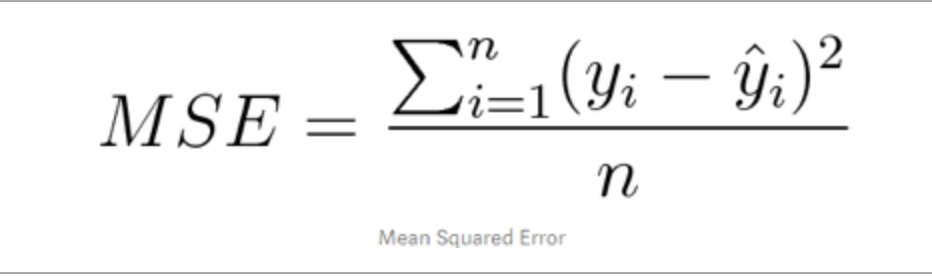
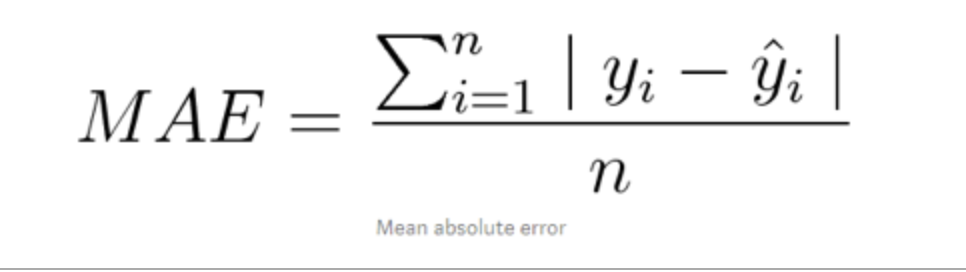
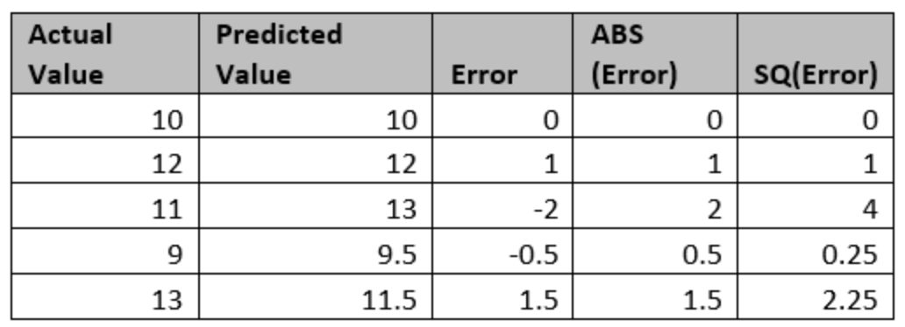
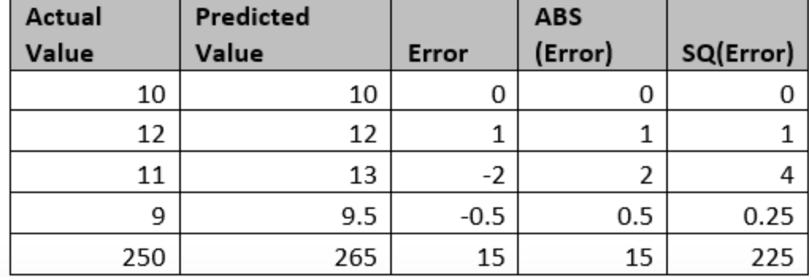
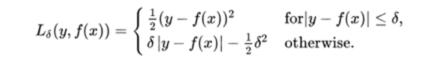

Motivation towards Huber Regressor
One of the first issue I had to deal with while working with Ordinary least Squares (OLS) Linear Regression was the impact which extreme values had on my model. To illustrate the nature of this problem, let me take a sample dataset consisting of mileage of 10 different cars manufactured by a renowned manufacturer {10.1, 10.2, 9.9, 10.1, 10.3, 10.2, 10.1, 10, 10.2, 17}. If this dataset was my training data set, the presence of value 17 will certainly impact my prediction in a dramatic manner there by making my model unreliable. This is statistically termed as Outlier. If we had an option to ignore outliers from the training dataset, it would make the model more reliable. Would we always have an option to ignore parts of our dataset due to the presence of Outliers? The answer would certainly be NO, especially when the sample size is small.
This problem is addressed by a variation of OLS regression called Robust Regression. This post focuses on Hubor Regression.
The Huber loss is a loss function used in robust regression, that is less sensitive to outliers in data than the squared error loss.
Robust regression is a form of regression analysis designed to overcome some limitations of traditional parametric and non-parametric methods. Regression analysis seeks to find the relationship between one or more independent variables and a dependent variable. It is used when the dataset has multiple outliers.
Loss Function
Loss Function Let’s start with discussing about Loss Function. Loss Function determines the difference between the actual value and predicted value for a given independent variable. Two loss functions to be considered in this context are Mean Square Error (MSE, also called as L2 Loss Function) and Mean Absolute Error (MAE, also called as L1 Loss function) MSE can be termed as the mean of square of error (difference between actual value and predicted value) and can be represented by the below equation:

MSE can be termed as the mean of absolute of error (difference between actual value and predicted value) and can be represented by the below equation:

Let’s dig deeper with an example to understand the impact of outliers on these two loss functions. Let’s take a random set of values to a dataset

Based on the details provided above, we can calculate L1 Loss Function to be 1 and L2 Loss Function to be 1.5. Let’s add an outlier to this dataset and assess the impact of it on both the Loss Functions. Let’s take a revised random set of dataset

Based on the details provided above, we can calculate L1 Loss Function to be 3.8 and L2 Loss Function to be 46.2.
It is clear that the outlier impacted both the Loss Function, but the impact is more on L2 than on L1 Loss Function. We can imply that L1 Loss Function is less sensitive to outliers than L2 Loss Function. Can we conclude that L1 Loss Function is best suited when outliers are present? Can we conclude that L2 Loss Function is best suited when outliers are not present?
Huber Loss Function
L1 loss is more robust to outliers, but its derivatives are not continuous, making it inefficient to find the solution. L2 loss is sensitive to outliers, but gives a more stable and closed form solution (by setting its derivative to 0).
Hubor Loss Function combines the best of both L1 and L2 Loss Function. It uses a hyperdelta (𝛿) parameter to determine whether to use L1 or L2 Loss Function. If 𝛿 is less than absolute value of error then use L2 else use L1 Loss Function. This is represented mathematically as described in this post

The value of 𝛿 is crucial in this function. It should be noted that this value should be identified iteratively.
Implementation
Let's put the above concept in to practice. As in many cases, python libraries are available which does the heavy lifting. Begin with importing relevant libraries
from matplotlib import pyplot as plt
import numpy as np
import pandas as pd
from scipy import stats
import seaborn as sns
from sklearn.model_selection import train_test_split
from sklearn.linear_model import HuberRegressor, LinearRegression, Ridge
from sklearn.datasets import make_regression
Below code snippet plots the data, Huber Regression and Linear Rigression for comparison. Note, how different epsilon values are resulting in different Huber Regression Plots
rng = np.random.RandomState(0)
X, y = make_regression(n_samples=20, n_features=1, random_state=0, noise=4.0,
bias=100.0)
# Add four strong outliers to the dataset.
X_outliers = rng.normal(0, 0.5, size=(4, 1))
y_outliers = rng.normal(0, 2.0, size=4)
X_outliers[:2, :] += X.max() + X.mean() / 4.
X_outliers[2:, :] += X.min() - X.mean() / 4.
y_outliers[:2] += y.min() - y.mean() / 4.
y_outliers[2:] += y.max() + y.mean() / 4.
X = np.vstack((X, X_outliers))
y = np.concatenate((y, y_outliers))
plt.plot(X, y, 'b.')
# Fit the huber regressor over a series of epsilon values.
colors = ['r-', 'b-', 'y-', 'm-']
x = np.linspace(X.min(), X.max(), 7)
epsilon_values = [1.35, 1.5, 1.75, 1.9]
for k, epsilon in enumerate(epsilon_values):
huber = HuberRegressor(fit_intercept=True, alpha=0.0, max_iter=100,
epsilon=epsilon)
huber.fit(X, y)
coef = (huber.coef_ * x) + huber.intercept_
plt.plot(x, coef, colors[k], label="huber loss, epsilon=%s" % epsilon)
# Fit a Linear regressor to compare it to huber regressor.
linear = LinearRegression(fit_intercept=True, normalize=True)
linear.fit(X, y)
coef_ridge = linear.coef_
coef = linear.coef_ * x + linear.intercept_
plt.plot(x, coef, 'g-', label="Linear Regression")
plt.title("Comparison of HuberRegressor vs Linear")
plt.xlabel("X")
plt.ylabel("y")
plt.legend(loc=0)
plt.show()


It can be noted that the epsilon value is an important factor in determining the Hubor Regression and the optimum value can be acheived iteratively as illustrated. It is to be noted that when the epsilon value is set to 1.9, the Huber Regression is similar to Linear Regression